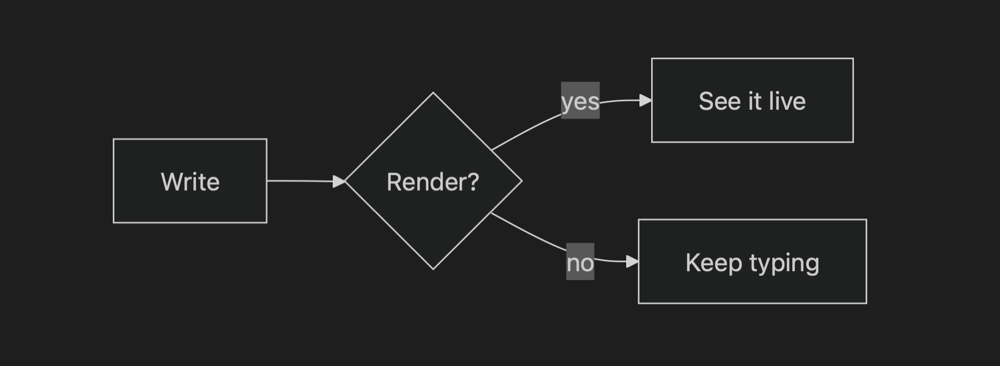
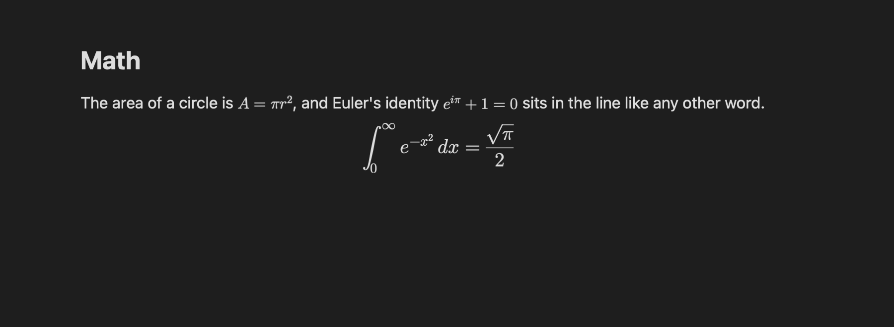
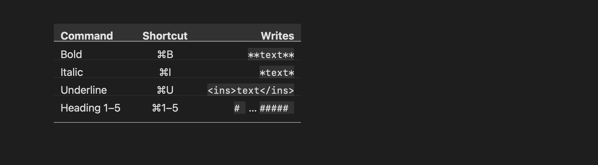
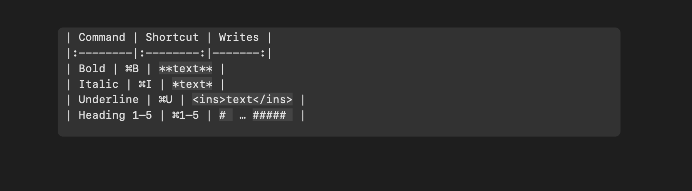
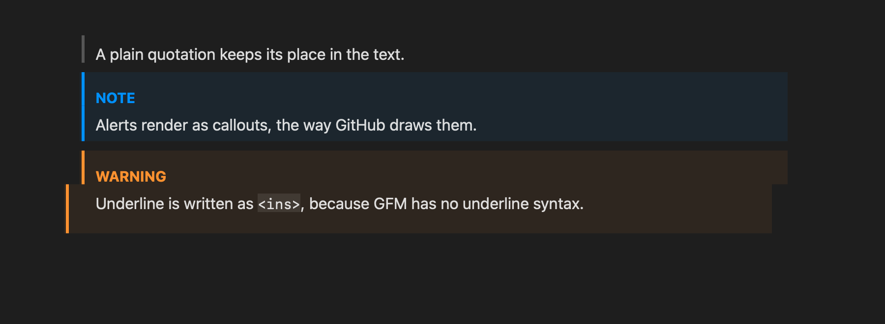
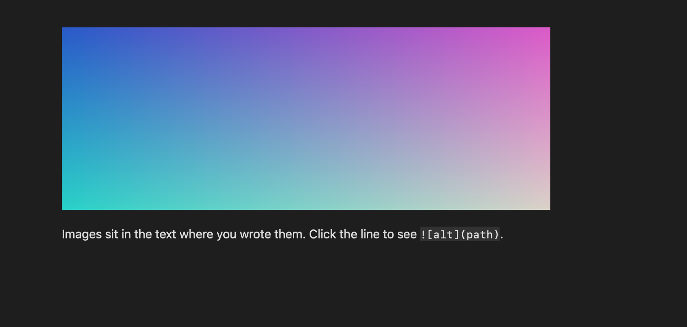
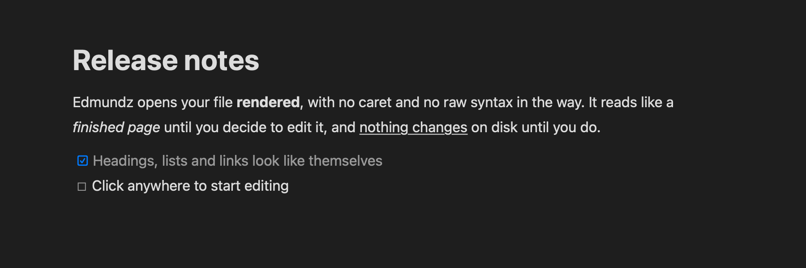
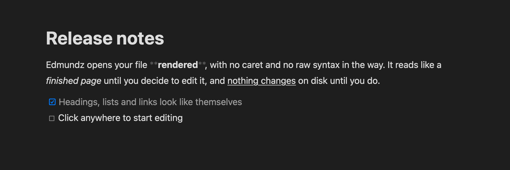

**Markdown**, rendered
while *you* type.
Markdown, rendered while you type.
Edmundz is a native Mac editor for Markdown. Your file opens already rendered; click a word and the syntax appears only where you are.
Every command has a key.
-
Wraps the selection, or the word under the caret, in two asterisks. Press it again to unwrap, and it unwraps
__underscore__bold too. -
One asterisk on each side. Inside a bold phrase it leaves the bold alone.
-
GitHub Flavored Markdown has no underline, so Edmundz writes
<ins>text</ins>, which GitHub draws underlined. It reads<u>too. -
Two tildes around the text, the way GFM writes it.
-
⌘1 to ⌘5 set the level and ⌘0 makes a paragraph again. Press the level a line already has and the heading comes off.
-
Wraps the selection as a link and puts the caret in the address. Inside an existing link it selects the address so you can change it.
-
Turns the lines into tasks. Click a checkbox to tick it; the click edits the Markdown underneath, as one undo step.
-
Backticks around the selection, or a pair with the caret between them.
No command matches. Try “bold”, “link” or “heading”.
Everything draws where you wrote it.






{width=640} if you ask. Paste or drop one and it is saved next to the document with the link written for you.How it works
First, it opens rendered.


# Release notes
Edmundz opens your file **rendered**, with no caret and
no raw syntax in the way. It reads like a *finished page*
until you decide to edit it, and nothing changes
on disk until you do.
- [x] Headings, lists and links look like themselves
- [ ] Click anywhere to start editingMeasured on an M2 Pro: a 1 MB file opens in 40 ms, a keystroke takes about 2 ms, it idles at 0.1% CPU, and it uses about 45 MB.
Get Edmundz
This opens your mail app with the message written. Edmundz needs macOS 26 and an Apple silicon Mac.